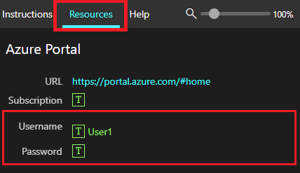
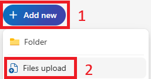

Microsoft 365 Copilot으로 작성하고 분석하고 발표하기
MS-4018 실습 랩 다섯 개를 한국어로 옮기고 막히기 쉬운 지점에 설명을 덧붙였습니다. Copilot Chat, PowerPoint, Word, Teams, Excel에서 Copilot을 직접 써 보며 실무 흐름을 익힙니다.
이 문서는 Microsoft Learn 실습 랩 MS-4018: Draft, analyze, and present with Microsoft 365 Copilot을 한국어로 옮기고 설명을 덧붙인 자료입니다. 원문 랩은 영어로만 제공됩니다.
Microsoft 365 Copilot은 기능과 화면이 빠르게 바뀝니다. 이 문서는 2026년 9월 기준이므로, 정확한 내용은 각 랩 머리의 원문 링크를 눌러 최신 버전으로 확인해 주세요.
프롬프트, 파일명, URL은 영어 원문 그대로 두었습니다. 번역하면 결과가 달라지므로 화면에 입력할 때는 영어 표기 그대로 사용하시면 됩니다.
화면 이미지와 원문 내용의 저작권은 Microsoft에 있습니다.
실습 한눈에 보기
| 랩 | 앱 | 하는 일 |
|---|---|---|
| 준비 | OneDrive | 샘플 파일 세 개를 OneDrive에 올려 Copilot이 참조하게 만들기 |
| 01 | Copilot Chat | 면접관·부서 조사, 예상 질문과 답변 초안, Copilot Page, 감사 메일 |
| 02 | PowerPoint | Idea Coach로 구성 잡기, 문서 두 개로 발표 자료 생성, 발표자 노트, 차트 설명 |
| 03 | Word | 보고서 초안, 섹션 다시 쓰기, 표 변환, Writing Coach로 점검 |
| 04 | Teams · Outlook | 채널 메시지 다듬기, Channel Agent 요약, Facilitator 회의 예약, 회의 준비 |
| 05 | Excel | 데이터 요약, 차트, 제품 비교, Python 예측, Analyst 에이전트 |
다섯 랩은 Contoso의 Chai Tea 제품을 소재로 이어집니다. 조사하고, 작성하고, 발표 자료를 만들고, 협업하고, 데이터를 분석하는 실무 순서를 그대로 따라갑니다. 화면에 입력하는 프롬프트는 모두 영어이므로, 이 가이드에서는 각 프롬프트가 무엇을 시키는지 한국어로 한 줄씩 풀어 줍니다.
이 실습을 끝까지 진행하려면 Microsoft 365 Copilot 라이선스가 있는 업무 계정이 필요합니다. 모든 단계는 브라우저의 온라인 앱에서 수행하며, 실제 회의에 참여하거나 회의를 시작할 필요는 없습니다.
공통 준비 · 샘플 파일을 OneDrive에 올리기
실습 내내 다음 파일을 참조하는 프롬프트를 작성합니다. Microsoft Copilot은 OneDrive에 저장된 파일만 참조할 수 있으므로, 시작하기 전에 세 파일을 OneDrive에 올려 둡니다.
- Promotion Plan for Chai Tea in Latin America.docx
- Market Analysis Report for Mystic Spice Premium Chai Tea.docx
- Contoso Chai Tea market trends.xlsx
샘플 파일을 OneDrive에 업로드하고, 나중에 Copilot이 파일을 찾을 수 있도록 최근 사용 목록에 올려 둡니다.
작업 · OneDrive에 파일 올리기
랩 환경(가상 머신)을 사용하는 경우, 로그인에 필요한 사용자 이름과 암호는 실습 화면의 Resources 탭에서 확인합니다.

- 테넌트 공급자가 제공한 가상 머신에 로그인합니다.
- Microsoft Edge 브라우저를 열고
https://onedrive.live.com/login/로 이동합니다. 제공된 자격 증명으로 로그인합니다. - 로그인 상태를 유지할지 물으면 Yes를 선택합니다.
- Your OneDrive is ready를 선택하고 환영 메시지는 건너뜁니다. 이어서 Create or upload > Files upload를 선택합니다.

OneDrive 화면 구성에 따라 업로드 버튼이 Create or upload 또는 Add new로 보일 수 있습니다. 어느 쪽이든 그 아래에서 Files upload를 선택하면 됩니다.
- File Explorer에서 This PC > Local Disk (C:)를 선택하고 Allfiles(MS-4018 ResourceFiles) 폴더를 엽니다.
- MS-4018 ResourceFiles 폴더 안의 파일을 모두 선택한 뒤 Open을 선택합니다.
- 업로드가 끝나면 화면 아래 가운데에 Uploaded 4 items to Documents 메시지가 표시됩니다.
Copilot에서 파일을 참조할 때 목록에 일부 파일이 안 나올 수 있습니다. 일부 Copilot 기능은 최근 사용 목록(MRU)에 있는 파일만 참조하기 때문입니다. 해당 파일을 각 Microsoft 365 앱에서 한 번 열어 두면 최근 사용 목록에 올라와 다시 참조할 수 있습니다.
Microsoft Copilot은 OneDrive에 저장된 파일만 처리합니다. 파일이 PC에만 있으면 Copilot이 인식하지 못하므로 반드시 OneDrive로 옮겨야 합니다.
랩 01 · Copilot Chat으로 면접 준비
사내 다른 직무에 지원했고 채용팀과 메일로 소통하는 상황을 가정합니다. 면접을 준비하고, 함께 일할 팀을 더 알아보고, 예상 질문에 답변 초안을 잡는 과정을 Microsoft Copilot 앱의 Copilot Chat으로 진행합니다.
이 랩은 m365.cloud.microsoft의 Microsoft Copilot 앱을 사용합니다. 업무 계정으로 로그인하고 본인 회사의 실제 정보를 넣어 따라 하면 됩니다.
원문에서 앱 이름 표기가 Microsoft 365 Copilot에서 Microsoft Copilot으로 바뀌었습니다. 화면에 어느 쪽이 보이더라도 같은 앱입니다.
Copilot Chat으로 면접관과 부서를 조사하고, 예상 질문을 뽑고, 답변 초안을 만든 뒤 Copilot Page로 저장합니다. 면접이 끝난 뒤에는 Outlook의 Copilot으로 감사 메일 초안까지 작성합니다.
연습 1 · 면접관 조사
https://m365copilot.com으로 이동해 업무 계정으로 로그인하고 Microsoft Copilot 앱을 엽니다.- New chat을 선택하고 채팅 영역에서 대화를 시작합니다.
- 다음 프롬프트에서 대괄호 자리 표시자를 본인 회사 값으로 바꿔 입력합니다.
면접관의 이름과 회사에서 맡은 역할에 관한 정보를 찾아 달라는 프롬프트입니다. [Interviewer's Name]은 나를 면접할 사람 이름으로, [Company Name]은 회사 이름으로 바꿉니다.
- Copilot의 답변을 살펴보고 관심 분야, 최근 프로젝트, 공개 발언 등 참고할 만한 배경을 메모합니다.
연습 2 · 부서 조사
면접에서 부서의 우선순위와 방향을 이야기할 수 있도록, 지원하는 부서를 조사합니다.
- 같은 Copilot Chat 대화에서 다음을 입력합니다.
해당 부서의 개요와 현재 집중 분야, 최근 추진 과제를 정리해 달라는 프롬프트입니다.
이 단계는 Researcher 에이전트로도 해 볼 수 있습니다. 왼쪽 탐색 창에서 Researcher를 선택한 뒤 다음을 입력합니다.
Researcher는 여러 단계에 걸쳐 웹을 조사하고 여러 출처를 종합해, 단일 프롬프트보다 더 폭넓은 브리핑을 돌려줍니다. 두 결과를 비교하면 깊이 차이를 확인할 수 있습니다.
- 답변을 살펴보고 면접 답변에 활용할 요점을 두세 개 골라 둡니다.
연습 3 · 예상 질문 만들기
즉흥적으로 답하기보다 준비된 답변을 마련할 수 있도록, 받을 가능성이 높은 질문을 Copilot으로 미리 뽑습니다.
- 같은 대화를 이어 갑니다.
- 다음 프롬프트를 입력합니다.
앞에서 파악한 부서의 집중 분야를 바탕으로, 해당 직무 면접에서 나올 만한 질문 목록을 만들어 달라는 프롬프트입니다. [job title]은 지원하는 직무 이름으로 바꿉니다.
- 생성된 질문 목록을 검토합니다.
연습 4 · 답변 초안 작성
Copilot이 만든 질문을 활용해, 본인 경험을 반영하고 직무에 맞춘 답변 초안을 작성합니다.
- 같은 대화에서 다음을 입력합니다.
앞선 질문마다 간결한 답변을 1인칭으로, 일반론 대신 구체적 사례 중심으로 작성해 달라는 프롬프트입니다.
- 각 답변을 검토합니다. Copilot의 초안은 완성본이 아니라 출발점입니다. 본인의 실제 경험을 반영하도록 계속 프롬프트를 주며 다듬고, 직접 손보는 과정을 거칩니다.
연습 5 · Copilot Page로 저장
질문과 답변을 다른 곳으로 복사하는 대신 Copilot Page로 저장합니다. 면접 전에 다시 열어 수정할 수 있는 지속형 캔버스입니다.
- 작성한 답변이 담긴 Copilot Chat 응답에서 More options(...)를 선택하고, 나타나는 연필 아이콘 Edit in Pages를 선택합니다.
- Copilot이 해당 내용을 Copilot Page로 열어 채팅 옆에 나란히 표시합니다.
- 페이지에서 바로 편집하고 순서를 바꾸거나 메모를 덧붙입니다.
- 오른쪽 위 Share 아이콘을 선택하고 Copy link를 선택하면, 멘토나 동료에게 피드백을 받을 링크를 복사할 수 있습니다.
조직 외부에 공유하거나 오프라인에서 쓰려고 Word 형식이 필요하면, Copilot Page 도구 모음에서 More options(...) → Export → Document를 선택합니다. 페이지가 .docx 파일로 내려받아지며, Open Word를 선택하면 Word에서 이어서 편집할 수 있습니다.
연습 6 · 감사 메일 초안
면접이 끝난 뒤에는 Outlook 측면 창의 Copilot Chat으로 감사 메일 초안을 작성합니다. 받은 편지함과 같은 맥락에서 앱을 바꾸지 않고 작업할 수 있습니다.
https://outlook.cloud.microsoft로 이동해 업무 계정으로 로그인합니다.- Create a new email을 선택해 새 메일 초안을 만들되, 아직 내용은 입력하지 않습니다.
- 오른쪽 위 Copilot 아이콘을 선택해 Copilot Chat 측면 창을 엽니다.
- 다음 프롬프트를 입력합니다.
오늘 면접에 대한 짧고 진솔한 감사 메일을, 전문적인 어조로 세 문단 이내로 작성해 달라는 프롬프트입니다. 대괄호 값은 실제 면접관 이름, 직무, 회사 이름으로 바꿉니다.
- 초안을 검토하고 실제 대화 내용에 맞게 어조와 세부 표현을 조정합니다.
- 초안을 Outlook의 새 메일에 붙여 넣고 받는 사람을 추가한 뒤 보냅니다.
랩 02 · PowerPoint로 발표 자료 만들기
Contoso의 선임 마케팅 관리자로서, 라틴 아메리카에 출시할 신규 Chai Tea 제품군 전략을 임원 회의에서 발표해야 하는 상황입니다. 청중에는 지역 부사장들과 데이터 기반 권고를 기대하는 CFO가 있습니다. 사업 계획서와 시장 조사 보고서를 바탕으로, 처음부터 다시 만들지 않고 완성도 높은 데이터 기반 발표 자료를 효율적으로 만듭니다.
두 파일 중 하나가 아직 OneDrive에 동기화되지 않았다면 몇 분 기다렸다가 파일 선택기를 새로 고칩니다. 기다리는 동안 첫 번째 계획 단계를 진행해도 됩니다.
Idea Coach로 발표 구성을 잡고, 문서 두 개를 원본으로 삼아 8슬라이드 임원용 발표 자료를 생성합니다. 발표자 노트를 만들어 CFO용 슬라이드를 다듬고, Explain 기능으로 차트를 이해한 뒤 최종 코칭 점검까지 마칩니다.
연습 1 · Idea Coach로 구성 잡기
PowerPoint를 열기 전에 Idea Coach로 발표의 뼈대를 정합니다. 계획 단계에서 프롬프트를 잘 잡아 두면 첫 초안이 더 탄탄해지고 나중에 손볼 일이 줄어듭니다.
https://m365.cloud.microsoft으로 이동해 Microsoft Copilot 앱을 엽니다. 왼쪽 탐색 창에서 Idea Coach를 선택합니다. 보이지 않으면 More agents를 선택하고 검색창에Idea Coach를 입력해 에이전트를 고른 뒤 Add를 선택합니다.- Message Idea Coach 상자에 다음 프롬프트를 입력합니다.
지역 부사장과 CFO를 대상으로 한 라틴 아메리카 Chai Tea 전략 발표에서, 핵심 메시지 서너 개와 8슬라이드 임원용 발표의 전개 흐름을 제안해 달라는 프롬프트입니다.
- Idea Coach가 돌려준 핵심 메시지와 구성을 검토합니다. 다음 생성 프롬프트를 쓸 때 참고할 수 있도록 이 결과를 화면에 띄워 둡니다.
Idea Coach는 발표 자료를 대신 만들어 주지 않습니다. 아이디어를 실행 가능한 형태로 발전시켜 주는 것이 강점입니다. 좋은 출발점을 찾을 때까지 계속 대화합니다.
연습 2 · 여러 원본으로 슬라이드 생성
구성 계획이 준비되면, 두 원본 파일을 참조해 발표 자료를 생성합니다. 출력 조건을 프롬프트에 명시하면 Copilot이 처음부터 요구 사항에 맞춰 만듭니다.
https://powerpoint.cloud.microsoft/new으로 이동해 빈 PowerPoint 발표를 엽니다.- 캔버스 오른쪽 아래의 Copilot 아이콘을 선택합니다.
- 다음 생성 프롬프트를 입력합니다.
Promotion Plan 문서에서 사업 전략과 권고 행동을, Market Analysis Report 문서에서 시장 기회 데이터와 지역 추세를 가져와 8슬라이드 임원용 발표를 만들어 달라는 프롬프트입니다. 어조와 청중까지 지정합니다.
- Add work content으로 Promotion Plan for Chai Tea in Latin America.docx와 Market Analysis Report for Mystic Spice Premium Chai Tea.docx를 첨부합니다.
/를 입력하거나 + → Add work content를 선택하면 됩니다. 두 문서를 첨부한 뒤 이를 주요 원본으로 사용합니다. - Copilot이 확인 질문을 하면 Idea Coach 세션의 핵심 메시지로 답합니다.
- 생성된 슬라이드를 검토합니다.
연습 3 · 발표자 노트 만들기
모든 슬라이드의 노트를 한 번에 생성한 뒤, CFO를 향하는 슬라이드를 발표용으로 다듬습니다.
- Copilot 창에 다음 프롬프트를 입력합니다.
모든 슬라이드에 전문적이고 간결한 발표자 노트를 생성해 달라는 프롬프트입니다.
- 시장 기회나 ROI 데이터를 다루는 슬라이드로 이동합니다.
- 다음 프롬프트를 입력합니다.
까다로운 질문을 하는 CFO 앞에서 시장 기회와 ROI 수치를 발표한다고 보고, 이 슬라이드의 노트를 권위 있고 데이터 중심으로 다시 써 달라는 프롬프트입니다.
- 발표자 노트를 표시합니다. 아래 방법 중 하나를 씁니다.
- 화면 아래 상태 표시줄에서 Notes를 선택합니다.
- 리본에서 View → Notes를 선택합니다.
- Copilot이 다시 작성한 발표자 노트를 검토합니다.
연습 4 · 차트 설명 받기
발표 자료는 두 원본 파일의 데이터를 종합하므로, 직접 작성하지 않은 수치가 차트나 표에 들어 있을 수 있습니다. 발표 전에 Copilot으로 데이터를 이해해 둡니다.
- 차트가 있는 슬라이드로 이동해 Copilot 창에 다음 프롬프트를 입력합니다.
경영진 앞에서 발표할 때 쉽게 이해하고 설명할 수 있도록 이 차트 내용을 풀어 달라는 프롬프트입니다.
- 차트가 무엇을 보여 주는지, 그 데이터가 맥락에서 어떤 의미인지, 주변 슬라이드의 흐름과 어떻게 맞물리는지 Copilot의 설명을 검토합니다.
연습 5 · 최종 코칭 점검
마무리하기 전에 발표 전체에 남은 문제를 Copilot에게 짚어 달라고 합니다.
- Copilot 창에 다음 프롬프트를 입력합니다.
전체와 슬라이드별로 개선 팁을 달라는 프롬프트입니다. 흐름의 일관성, 임원용 메시지의 명료성, 데이터 근거가 약한 슬라이드에 초점을 둡니다.
- Copilot의 답변을 검토하고, 이 랩에서 익힌 Copilot 기능으로 필요한 변경을 적용합니다.
랩 03 · Word로 문서 작성하기
프로젝트 관리자로서 회사의 신제품 Mystic Spice Premium Chai Tea에 대한 종합 프로젝트 보고서를 작성하는 상황입니다. Word의 Copilot으로 보고서를 초안하고 편집해 다듬은 뒤, 공유하기 전에 Writing Coach 에이전트로 점검합니다.
시장 분석 문서를 원본으로 보고서 초안을 만들고, 제품 설명 섹션을 다시 쓰고, 목표 목록을 표로 바꾼 뒤 Writing Coach로 글의 품질을 점검합니다.
연습 1 · 보고서 초안
이미 확보한 시장 분석 자료로 프로젝트 보고서를 만든 다음, 필요한 내용에 맞게 편집합니다.
https://word.cloud.microsoft/new을 입력해 새 Word 문서를 엽니다.- 빈 문서 위쪽의 캔버스 프롬프트 상자 Describe what you'd like to draft with Copilot을 선택합니다.
- 다음 프롬프트를 입력합니다.
요약, 서론, 제품 설명, 프로젝트 목표, 논의로 구성된 프로젝트 보고서를 만들되 연결한 문서를 콘텐츠 자료로 쓰라는 프롬프트입니다.
- 슬래시(
/)에 이어 문서 이름을 입력해 문서 참조를 추가합니다. /Market Analysis Report for Mystic Spice Premium Chai Tea.docx를 드롭다운 목록에서 선택하거나, Files를 선택해 파일을 찾습니다. - Generate 버튼(오른쪽 화살표)을 선택해 프롬프트를 제출합니다.
- 작성된 내용을 검토하고 Done을 선택해 문서에 삽입합니다.
연습 2 · 섹션 다시 쓰기
초안을 검토하면 조정이 필요한 섹션이 보입니다. 제품 설명(Product Description)이 좋은 후보입니다. 첫 초안에서는 짧고 기술적인 경향이 있기 때문입니다.
- 제품 설명 문단을 선택합니다. 나타나는 플로팅 도구 모음에서 Edit with Copilot을 선택합니다.
- 다음 프롬프트를 입력합니다.
제품 설명 섹션을 고위 비즈니스 청중에게 더 상세하고 흥미롭게, 전문적인 어조를 유지하며 다시 써 달라는 프롬프트입니다.
- 다시 작성된 문장을 검토하고 Done을 선택해 원래 문장을 교체합니다.
연습 3 · 표로 변환
프로젝트 목표가 목록으로 나열돼 있지만, 표로 바꾸면 리더가 각 목표와 그 이유, 성공 측정 방법, 집중할 지점을 한눈에 볼 수 있습니다.
- 현재 형식을 볼 수 있도록 프로젝트 목표(Project Objectives) 섹션으로 이동합니다.
- Copilot 창에 다음 프롬프트를 입력합니다.
프로젝트 목표 섹션을 목표, 근거, 성공 지표, 대상 채널, 우선순위 열을 가진 표로 바꿔 달라는 프롬프트입니다.
- 생성된 표를 검토하고 Done을 선택해 삽입합니다.
- 문서를 닫지 않습니다. 다음 연습에서 이 문서의 텍스트를 복사해 씁니다.
연습 4 · Writing Coach로 다듬기
보고서를 공유하기 전에 Writing Coach 에이전트로 글의 품질을 점검합니다.
- 브라우저에서
https://m365.cloud.microsoft으로 이동해 Microsoft Copilot을 엽니다. - Agents 패널에서 Writing Coach를 선택합니다. 보이지 않으면 More agents를 선택하고 검색창에
Writing Coach를 입력해 에이전트를 고른 뒤 Add를 선택합니다. - Word 문서에서 검토할 섹션을 고릅니다. 요약(Executive Summary)이 시작하기 좋습니다.
- Writing Coach에 초점을 좁힌 질문을 입력하고, 이어서 Word 문서의 텍스트를 붙여 넣습니다.
이 텍스트를 명료성과 어조 측면에서 검토하고 구체적인 개선안을 제안해 달라는 프롬프트입니다. [paste text] 자리에는 문서에서 복사한 실제 텍스트를 붙여 넣습니다.
- 피드백을 검토하고 Word 문서에 변경을 적용합니다.
Writing Coach는 한 번에 하나의 질문을 다룹니다. 가장 유용한 피드백을 받으려면 프롬프트마다 초점을 좁힌 질문 하나씩만 던집니다.
- 변경 사항이 저장됐는지 확인합니다. 이제 문서는 검토용으로 공유하거나 PowerPoint 발표의 원본 자료로 쓸 준비가 됐습니다.
랩 04 · Teams로 협업 준비하기
Contoso의 제품 관리자로서 Contoso Connect 제품 출시를 준비하는 상황입니다. 팀의 우선순위를 맞추고, 채널 대화에서 맥락을 모으고, 계획 회의를 체계적으로 예약합니다. Teams와 Outlook의 Copilot으로 회의가 시작되기 전에 미리 준비합니다.
이 랩을 진행하려면 Microsoft 365 Copilot 라이선스와 Microsoft Teams, Outlook 접근 권한이 필요합니다. 모든 단계는 온라인 앱에서 완결되며, 실제 회의에 참여하거나 회의를 시작할 필요는 없습니다.
채널 메시지를 Copilot으로 다듬어 게시하고, Channel Agent로 스레드를 요약합니다. Facilitator를 켠 상태로 Outlook에서 회의를 예약하고, 회의 전에 Copilot으로 맥락을 검토합니다.
연습 1 · 채널 메시지 다듬기
회의를 예약하기 전에, 프로젝트 채널에서 팀과 맥락을 공유하고 기대치를 맞춥니다.
https://teams.cloud.microsoft으로 이동해 Microsoft Teams를 엽니다.- Get to know Teams 대화 상자가 나타나면 Get Started를 선택하고 대화 상자를 닫습니다.
- Chat에서 See all your teams를 선택합니다.
- Create team을 선택하고 새 팀을 다음처럼 설정합니다.
- Team name · Contoso Connect Launch
- Description · 비워 둠
- Team type and sensitivity · Private, None
- First channel name · Launch Planning
- Create를 선택하고, 멤버를 추가하라는 안내가 나오면 Skip을 선택합니다.
- Post in channel을 선택해 Launch Planning 채널의 메시지 작성기를 엽니다.
- 다음 텍스트를 메시지 상자에 붙여 넣습니다.
출시 준비에 앞서 우선순위를 맞추자는 팀 안내 메시지입니다. 이 원문을 그대로 붙여 넣은 뒤 Copilot으로 다듬습니다.
- 게시하기 전에 메시지 상자 아래 펜 아이콘(Rewrite with Copilot)을 선택합니다.
- Rewrite를 선택해 개선된 버전을 생성합니다. 좌우 화살표로 다른 버전을 살펴봅니다.
- Adjust를 선택하고 Make it sound에서 Enthusiastic을 골라 어조를 바꿉니다.
- Copilot이 각 수정본을 별도 버전으로 제공합니다. 좌우 화살표로 버전을 비교하고 마음에 드는 것을 고릅니다.
- Replace를 선택한 뒤 Post를 선택해 메시지를 게시합니다.
연습 2 · 채널 맥락 쌓고 스레드 요약
Channel Agent는 채널 스레드를 요약해 논의 내용을 빠르게 따라잡게 해 줍니다. 이 연습에서는 메시지를 몇 개 더 올려 맥락을 만든 뒤 Channel Agent로 개요를 받습니다.
- Launch Planning 채널을 연 상태에서 메시지를 두세 개 더 올려 스레드를 채웁니다. 예를 들면 다음과 같습니다.
라이브 데모, 얼리 액세스 가격, 자료 일정과 데모 환경 확인 등 서로 다른 논점을 담은 메시지 예시입니다. 이렇게 맥락을 쌓아야 요약이 의미를 가집니다.
- 메시지를 올린 뒤 채널 오른쪽 위 Open agents and bots 아이콘을 선택합니다.
- Agents and bots 창에서 Channel Agent 옆의 Add를 선택합니다.
- Channel Agent 게시물에서 Ask me a question을 선택합니다.
- 다음 프롬프트를 입력합니다.
이 스레드에서 나온 아이디어와 미해결 질문이 무엇인지 요약해 달라는 프롬프트입니다.
- 요약을 검토합니다. 번호가 붙은 인용을 선택하면 채널에서 원본 메시지를 볼 수 있습니다.
- 이어서 후속 프롬프트를 입력합니다.
회의 안건으로 쓸 논의 주제를 짧은 목록으로 만들어 달라는 프롬프트입니다. 이 목록은 다음 연습에서 씁니다.
연습 3 · Facilitator를 켜고 회의 예약
이제 Outlook에서 회의 초대를 만들고 안건을 넣은 뒤, 회의가 효과적으로 진행되도록 Facilitator를 켭니다.
https://outlook.office.com으로 이동해 Microsoft Outlook을 엽니다.- Calendar를 열고 New event를 선택합니다.
- 제목을 Contoso Connect Launch Planning처럼 지정하고 오늘 늦게나 내일로 시간을 잡습니다.
- Teams meeting이 켜져 있는지 확인합니다.
- 회의 설명에 연습 2에서 Channel Agent가 뽑아 준 주제로 짧은 안건을 입력합니다. 예를 들면 다음과 같습니다.
고객 참여 아이디어, 출시 일정 검토, 데모 환경 확인, 작업 배정, 마무리로 이어지는 시간 배분 안건 예시입니다.
안건도 Copilot이 초안해 줄 수 있습니다. New event 창 오른쪽 위의 Copilot 아이콘을 선택하고 다음을 입력합니다.
- Options를 선택해 Meeting options 대화 상자를 엽니다.
- Copilot and other AI에서 Allow Copilot and Facilitator가 During and after the meeting으로 설정돼 있는지 확인합니다.
- Facilitator 토글을 켜고 Apply를 선택합니다.
- Save를 선택해 초대를 저장합니다.
주최자가 아닌 참가자가 한 명이라도 회의에 참여하면, Facilitator가 회의 채팅에 안건을 자동으로 올리고 회의 화면에 타이머를 표시합니다.
연습 4 · Outlook에서 회의 준비
이벤트를 만든 뒤, 참여 전에 Copilot으로 맥락을 검토하며 준비합니다.
- Outlook 일정에서 회의 이벤트를 엽니다.
- 이벤트 양식 위쪽의 Prepare for this meeting 섹션을 찾습니다. Show more를 선택하면 관련 메일, 문서, 채팅 기록에서 Copilot이 모은 요약을 볼 수 있습니다.
메일 기록, 채팅 활동, 연결된 공유 파일이 없는 새 환경에서는 Prepare for this meeting 섹션이 나타나지 않거나 결과가 제한적일 수 있습니다. 정상 동작입니다. Copilot은 충분한 맥락이 있을 때만 회의 준비 콘텐츠를 생성합니다. 섹션이 보이지 않으면 이 랩을 완료한 것으로 봐도 됩니다.
- 제안된 프롬프트 중 하나를 선택하거나, Copilot 채팅 창에 직접 입력합니다.
회의 전에 안건이나 참석자에 대해 알아 둘 점을 정리해 달라는 프롬프트입니다.
- 후속 프롬프트를 입력합니다.
회의를 시작할 때 쓸 짧은 개회 발언을 작성해 달라는 프롬프트입니다.
- 답변을 검토합니다. Copilot이 회의 제목, 설명, 사용 가능한 맥락을 활용해 관련 결과를 만드는 방식을 확인합니다.
랩 05 · Excel로 데이터 분석하기
Contoso의 영업 관리자로서 판매 데이터를 분석하고 실적 개선에 도움이 되는 추세를 찾는 상황입니다. Excel의 Copilot으로 Contoso Chai 제품의 판매 데이터를 여러 각도에서 살펴보고 분석합니다. 데이터 개요와 핵심 지표를 파악하고, 추세를 분석하고, 제품 판매를 비교하고, Python으로 미래 판매를 예측한 뒤 Analyst 에이전트로 데이터를 탐색합니다.
이 랩을 끝까지 진행하려면 OneDrive 계정이나 SharePoint 접근 권한이 필요합니다. 시작하기 전에 Contoso Chai Tea market trends.xlsx 파일을 OneDrive에 저장해 둡니다.
Excel의 Copilot으로 데이터를 요약하고, 꺾은선과 막대 차트를 만들고, 제품 판매를 비교합니다. Copilot in Excel with Python으로 다음 분기 판매를 예측하고, Analyst 에이전트로 교차 지표 질문을 던져 핵심 인사이트를 정리합니다.
연습 1 · 데이터 살펴보기
시장 추세를 파악하려면 먼저 Contoso Chai 제품의 전체 실적을 이해해야 합니다. 데이터 개요를 얻고 분석을 이끌 핵심 지표를 찾습니다.
- OneDrive에 올린 샘플 파일 Contoso Chai Tea market trends.xlsx를 엽니다.
- Excel 창 오른쪽 아래의 Copilot 아이콘을 선택합니다.
- Allow editing이 선택돼 있는지 확인합니다.
- Copilot 창에 다음 프롬프트를 입력해 제출합니다.
데이터셋을 요약하고 핵심 지표의 개요를 제공해 달라는 프롬프트입니다. Copilot이 데이터의 요약본에 해당하는 새 시트를 만들 수 있습니다.
- 이어서 다음 프롬프트를 입력합니다.
데이터의 핵심 패턴을 보여 주는 표를 새 시트에 만들어 달라는 프롬프트입니다.
- Copilot이 생성한 표를 검토합니다.
연습 2 · 판매 추세 파악
영업 관리자로서 판단을 내리려면 판매 데이터의 추세를 파악해야 합니다. 연간 총 chai 판매를 살펴보고 전략에 참고할 패턴을 찾습니다.
- 열려 있는 Copilot 창을 이어서 씁니다.
- 다음 프롬프트를 입력해 제출합니다.
월별 Total Chai Sales(units)를 꺾은선 차트로 새 시트에 만들어 달라는 프롬프트입니다.
- 월별 Total Chai Sales(units) 차트를 검토합니다.
연습 3 · 제품 판매 비교
제품 구성을 최적화하려면 서로 다른 chai 제품의 판매를 비교해야 합니다. Copilot으로 Artisanal Chai와 Premade Chai의 판매를 비교해 어느 범주가 더 나은 실적을 냈는지 확인합니다.
- 열려 있는 Copilot 창을 이어서 씁니다.
- 다음 프롬프트를 입력해 제출합니다.
월별로 Artisanal Chai Sales(units)와 Premade Chai Sales(units)를 비교하는 막대 차트를 새 시트에 만들어 달라는 프롬프트입니다.
- 여름철은 판매 편차가 큰 경우가 많습니다. 다음 프롬프트를 입력해 제품 실적을 비교합니다.
여름철 Artisanal Chai와 Premade Chai의 총 판매(units)를 요약해 달라는 프롬프트입니다.
- Copilot이 "여름"의 범위를 명확히 하려고 확인 질문을 할 수 있습니다. 원하는 기준을 입력한 뒤 결과를 검토합니다. 다음 연습을 위해 Copilot 창은 열어 둡니다.
연습 4 · Python으로 예측
Copilot in Excel with Python을 쓰면 코드를 작성하지 않고 통계 예측을 실행할 수 있습니다. 데이터의 월별 추세를 바탕으로 미래 Artisanal Chai 판매를 예측합니다.
- Copilot 창에 다음 프롬프트를 입력해 제출합니다.
과거 실적을 바탕으로 가장 적합한 예측 방법을 골라 다음 분기의 Artisanal·Premade Chai 판매를 예측하고 모델 진단까지 포함해 달라는 프롬프트입니다. Copilot이 Python 코드를 생성해 실행하고 예측 시트와 차트를 만듭니다.
- Copilot의 응답과 예측 결과를 검토하고 Done을 선택해 변경을 확정합니다.
- 파일이 저장됐는지 확인합니다. 다음 연습에서 갱신된 버전을 씁니다.
연습 5 · Analyst 에이전트로 탐색
Analyst 에이전트는 채팅 인터페이스에서 데이터에 질문할 수 있게 해 줍니다. 샘플 파일을 첨부하고 교차 지표 질문을 던져, Excel 내 분석과 이어지는 패턴을 에이전트가 어떻게 드러내는지 확인합니다.
- 브라우저에서
https://m365.cloud.microsoft으로 이동합니다. - 왼쪽 탐색에서 Analyst 에이전트를 선택합니다.
- + 아이콘을 선택하고 OneDrive에서 Contoso Chai Tea market trends.xlsx 파일을 첨부합니다.
- 다음 프롬프트를 입력해 제출합니다.
연간 Artisanal Chai와 Premade Chai의 판매 실적을 비교하고 어느 제품이 더 강한 성장을 보였는지 찾아 달라는 프롬프트입니다.
- 답변을 검토합니다. Analyst 에이전트가 Excel에서 분석한 것과 같은 데이터셋에서 비교와 패턴을 드러내는 방식을 확인합니다. 여러 파일을 다룰 때 특히 유용한 채팅 기반 방식입니다.
연습 6 · 인사이트 정리
분석에서 얻은 핵심 인사이트를 요약합니다. 이 인사이트가 Contoso의 판매 성장을 이끄는 데이터 기반 판단에 도움이 됩니다.
- 열려 있는 Copilot Analyst 에이전트 창에 다음 프롬프트를 입력해 제출합니다.
Contoso Chai Tea 시장 추세 데이터 분석에서 얻은 상위 5개 핵심 인사이트를 요약해 달라는 프롬프트입니다.
- 요약을 검토합니다. 이 내용으로 팀을 더 빠르게 이해시킬 수 있습니다.
원문 링크
- 준비 · Follow along using sample data with Microsoft Copilot
- 랩 01 · Ace your interview with Copilot Chat
- 랩 02 · Build a presentation from start to finish with Copilot in PowerPoint
- 랩 03 · Draft, improve, and share your document with Copilot in Word
- 랩 04 · Manage collaboration from start to finish
- 랩 05 · Boost your productivity with data-driven decisions with Copilot in Excel